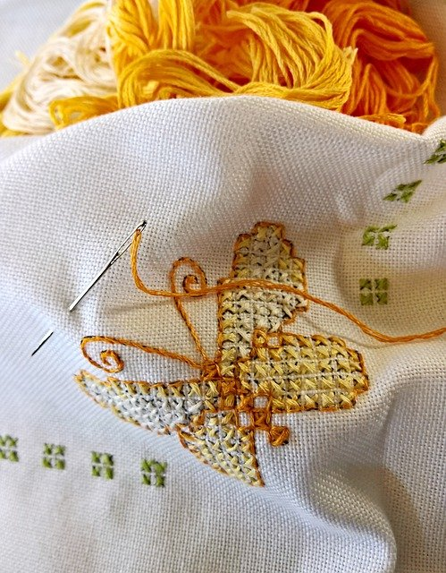

Projektowanie ubrań
Jest to kolejne zdanie którego każdy może się podjąć wydaje się ono tylko względnie próbne. Na początek warto zacząć od wymyślania wzorów na ubraniach a następnie wraz z postępem umiejętności zacząć wymyślać własne projekty ubrań, różne kroje lub rozmiary i zabierać się za coraz to kreatywniejsze projekty. Hobby to można połączyć z Haftowaniem, które doda zaprojektowanym ubraniom jedyny w swoim rodzaju i ciekawy wygląd.
Jak narysować projekt ubrania
Haft ręczny - od czego zacząć
